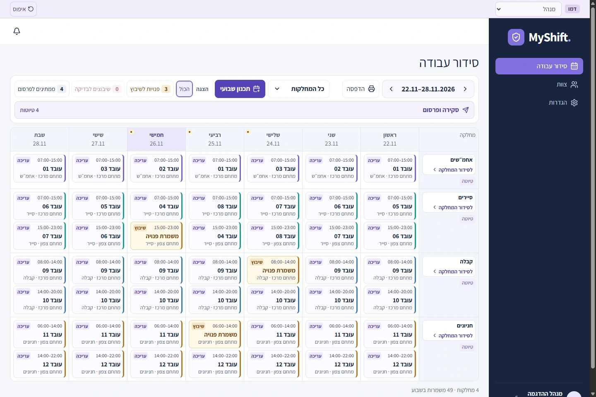

ניהול משמרות · דמו מקורי
MyShift
עברו מתכנון שבועי של מנהל אל סידור המשמרות של עובד.
- תכנון שבועי לכמה מחלקות, איתור משמרות פנויות וסקירת השיבוצים לפני פרסום.
- תצוגה אישית לעובד עם המשמרות שפורסמו עבורו.
זהו מסלול הדמו של MyShift, באריזה מקומית עם עובדים ממוספרים. שינויים נשמרים בדפדפן הזה.
פתיחת ההדגמה